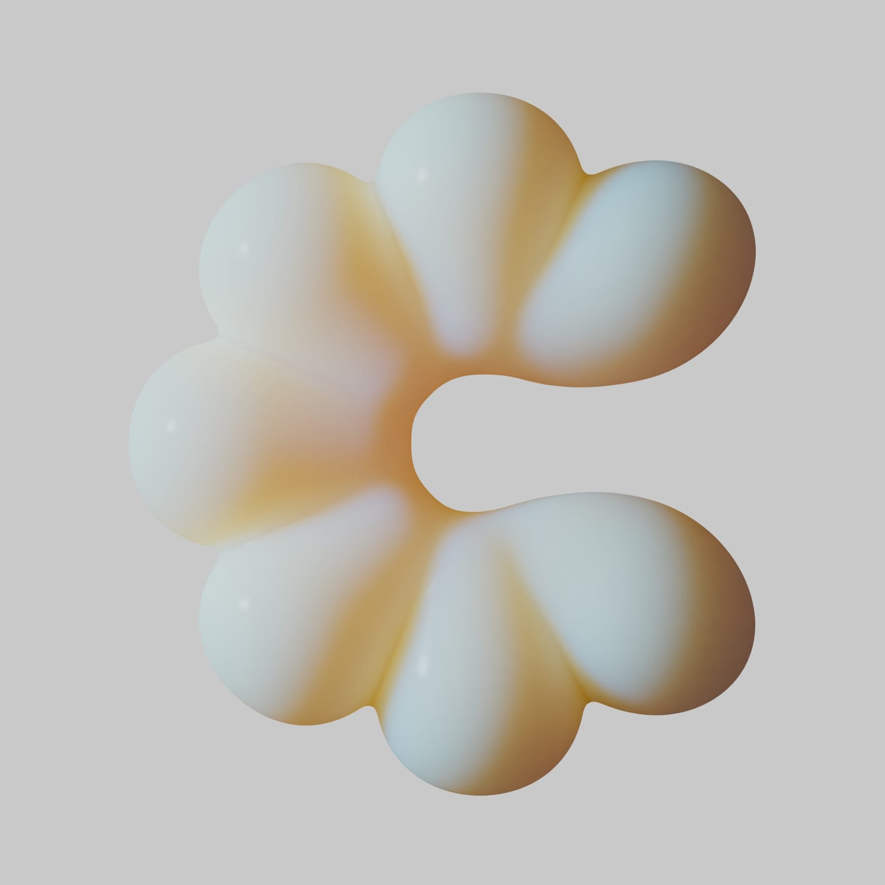
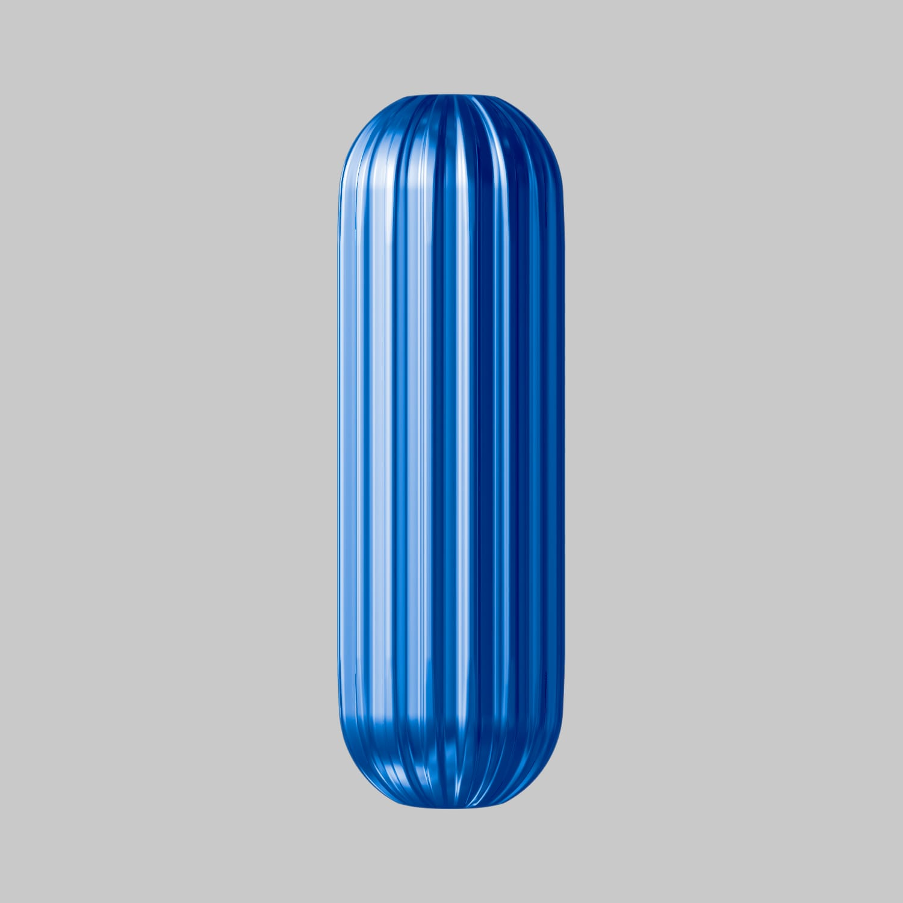
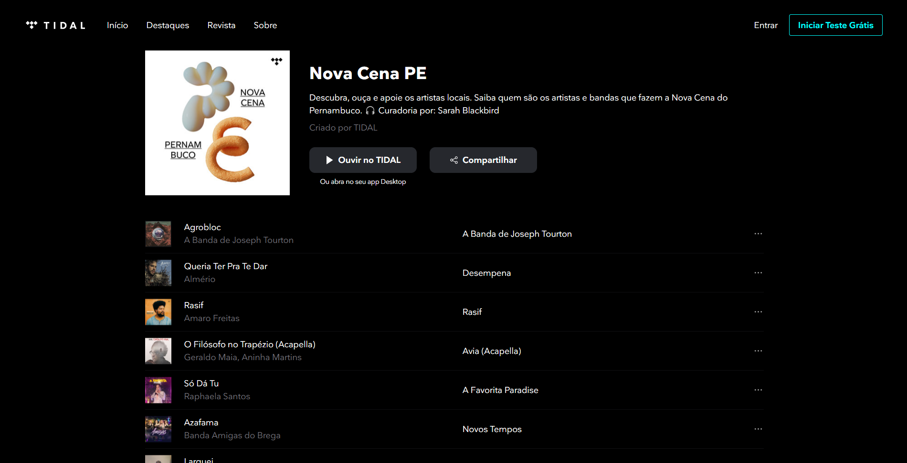
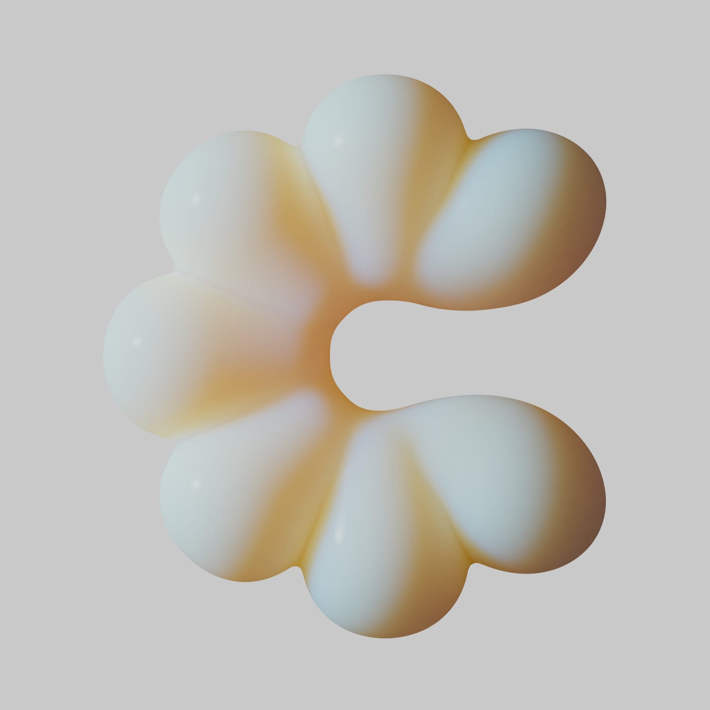
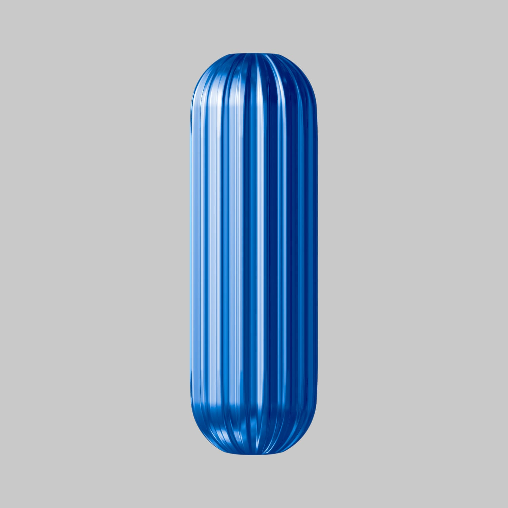
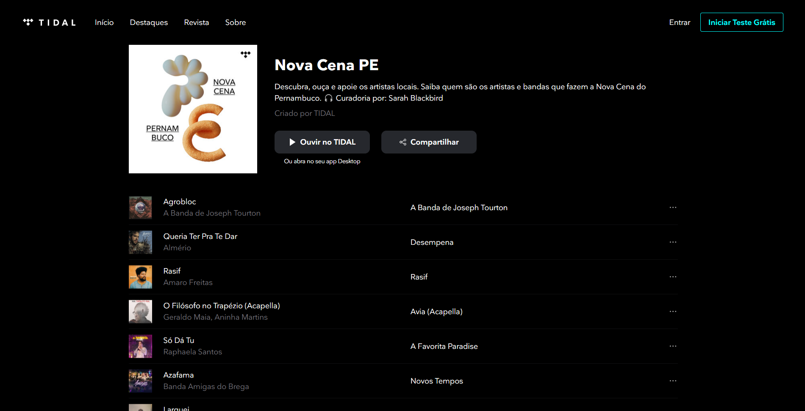

TIDAL "Cena Brasil"
Cena Brasil (Brazil Scene) was a project developed by TIDAL Brazil that selected curators from all states to develop the playlists Nova Cena Brasil (Brazil New Scene), recomending each state's revelation and Essencial Cena Brasil (Brazil Essential Scene), dedicated to classics everyone should know.
Para os visuais das letras, os materiais mudaram de acordo com a playlist. Para a Essencial de cada estados, por contar com clássicos e artistas já consagrados, utilizamos materiais mais duros e fortes. No caso da Nova Cena, que trata de artistas novos e em ascensão, a escolha foi por materiais mais flexíveis e suaves.
Client: Tidal
3D, Illustration
Year: 2020
Art Direction and Graphic Design: Lívia Nishibe
3D: Bruno Faiotto & Leonardo Bortolussi


 




